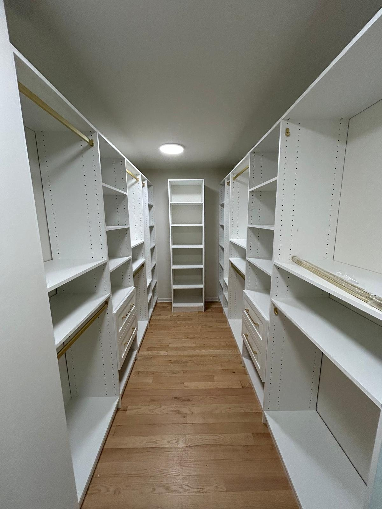

The number is 36 inches
Three-quarter-inch melamine-faced particle board, loaded with folded clothes or books, deflects visibly somewhere past a 36-inch unsupported span. Not immediately. It creeps over months, and by the time you notice it does not come back.
This is why every tower we build runs between 24 and 36 inches. Past 36 we put a partition in. That partition is cheaper than a shelf that bows.
Why anyone would build wider bays
Fewer partitions means fewer parts, less labour and a lower quote. A 96-inch wall built as three 32-inch bays needs four vertical panels. Built as two 48-inch bays it needs three. That is a real saving, and it is borrowed against the shelf.
How to check a quote
Ask for the tower widths. Not the overall width. The individual bays. If any single tower is over 36 inches and it carries shelving, ask what supports the middle. There are legitimate answers: a thicker shelf, a steel insert, a centre support. “It will be fine” is not one of them.

What about hanging rods?
Rods are different. A standard closet rod spans up to about 48 inches before it needs a centre support, because the load path is different and the rod is steel. So a 42-inch tower that is pure hanging is fine. A 42-inch tower with shelves above the hanging is not. The shelf is the problem, not the rod.
Our builder enforces this. Push a bay past 36 inches and it tells you, before it prices it.
What actually decides whether a shelf bows
Four things, and only one of them is the material. Span is by far the biggest, because deflection rises with the cube of the distance between supports. Double the span and you do not get twice the sag, you get roughly eight times it. That single fact is why a 36-inch rule exists at all, and why a 42-inch bay is not "a bit worse" than a 36-inch one.
Depth helps you, slightly. A 16-inch shelf is stiffer across its span than a 12-inch one because there is more material resisting the bend. Thickness helps you a great deal, for the same cubic reason: half-inch board in a closet is not a cost saving, it is a future complaint. And load matters, obviously, but not in the way most people assume. It is not the total weight, it is the weight in the middle.
| Clear span | What we do with it |
|---|---|
| Up to 24" | Nothing special. A ¾" shelf here will outlive the house. |
| 24" to 32" | Standard. This is where most of our shelving lands. |
| 32" to 36" | Fine for folded clothing and bags. We would not put tinned food here. |
| Over 36" | A partition goes in. There is no version of this we build without one. |

The sag you can see is not the sag that matters
A shelf that has visibly dropped in the middle has usually been like that for a year or two before anyone noticed. Melamine does not spring back. The board creeps under sustained load, which means a shelf that looked fine on installation day and is loaded to the same weight every day will slowly take a set and keep it.
This is why we care about the span on the day rather than waiting to see what happens. A shelf that is going to bow is already going to bow; it just has not finished yet.
What to do when you cannot shorten the span
Sometimes the room will not take a partition where the arithmetic wants one: a window below, a run that has to stay open, a client who does not want the look of it. There are three real answers, in the order we would reach for them.
- Double the shelf up. Two ¾" panels glued and banded as one reads as a 1½" shelf. It is noticeably stiffer, it looks deliberate, and it costs a second panel.
- Add a front edge. A strip of board run on edge along the front of the shelf turns a flat panel into something closer to a beam. This is what a shop-built bookcase does.
- Put the load somewhere else. Often the honest answer. If the long span is going to hold handbags and the short one is going to hold books, swap them.
What we will not do: fit a metal stiffener under a shelf that is too long and call it solved. It works, briefly, and then you have a bent shelf with a bar under it.
Garages are a different problem
Everything above assumes a closet load: clothes, linen, shoes, boxes. A garage shelf holds paint tins, tools and bulk buying, which is several times the weight per foot. We build garage shelving to shorter spans and deeper sections for exactly that reason, and we build it floor standing rather than wall hung so the load goes into the ground instead of into the studs.
If someone has quoted you the same shelving for your closet and your garage, they have not thought about either of them. What we build in a garage is not the same cabinetry with a different label on it.